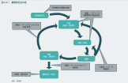

2024年
問題156 循環型社会の形成に関する次の記述のうち，最も不適当なものはどれか．
（1）生産において，積極的にマテリアルリサイクルを行う．
（2）生産において，積極的にリユースを行う．
（3）消費・使用において，積極的にリデュースを行う．
（4）焼却処理において，積極的にサーマルリサイクルを行う．
（5）最終処分において，積極的に天然資源を投入する．
2024年
問題156 正解（5） 頻出度AAA
-(5) は，「最終処分において適正処分を進める．」，もしくは「生産において，天然資源の消費の抑制を進める．」が正しい．
平成12年（2000年）に制定された「循環型社会形成推進基本法」に基づく循環型社会形成推進基本計画では，廃棄物等の3R(リデュース，リユース，リサイクル)を進めることとされているが，その実施順位について2024-156-1図のようにイメージされている．

出典 環境省環境省 平成25年版 環境・循環型社会・生物多様性白書（PDF版）197頁
https://www.env.go.jp/policy/hakusyo/h25/pdf/2_3.pdf